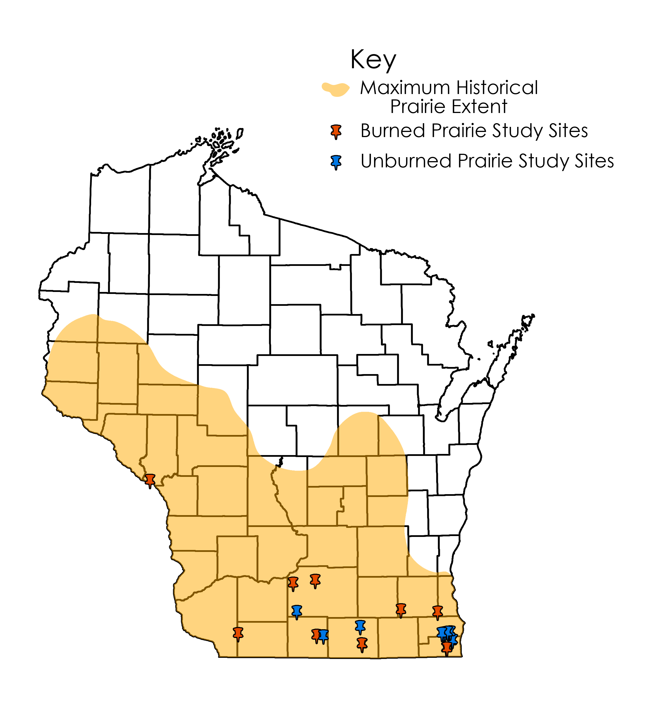
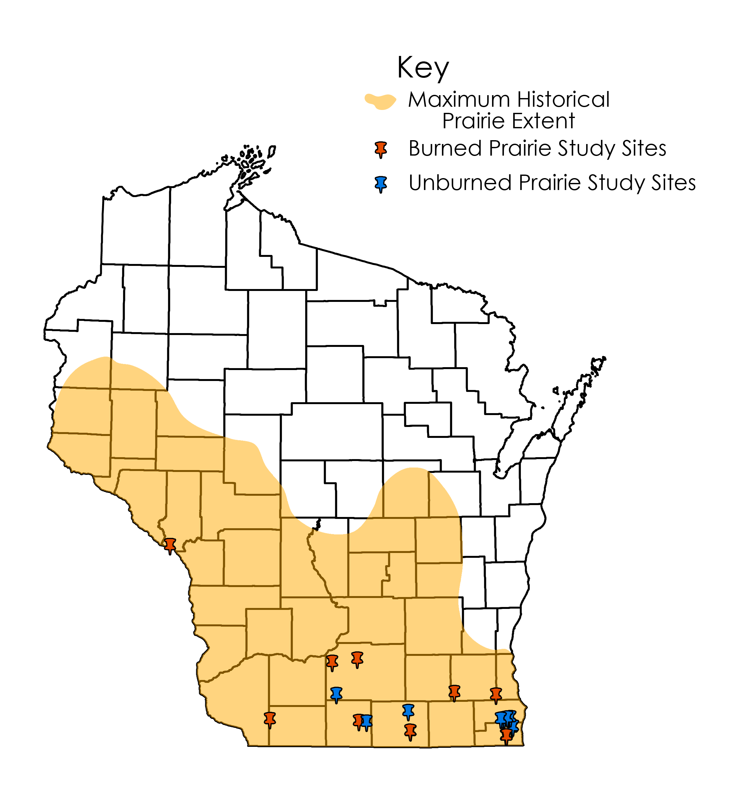

Research
Master's Thesis: Systematic Conservation Planning in Tsay Keh Dene Territory: Incorporating Climate Change and Bridging Traditional Ecological Knowledge Fall '19 - Spring '21 (Poster)
Systematic Conservation Planning (SCP) asserts that the practice of protecting lands should be considered on a broad scale and be holistic in nature. Available areas of land with conservation potential should be examined critically for whether they fit into a larger ecological network – either as a link between existing protected areas, or as an area that is ecologically significant on its own. It is this proactive, rather than reactive mindset that sets it apart from historical protected areas creation. This research project is an application of SCP principles and tools for a specific geography – the Tsay Keh Dene Nation Territory in north-central British Columbia, Canada.
Working with the Tsay Keh Dene community, I will gather a set of conservation features in order to identify locations of key ecological, cultural, and recreational value within the Territory. These include umbrella species, significant ecosystem characteristics, and land facet diversity and rarity, among others, for inclusion in a geospatial analysis. In turn, each of these features will have goals and targets identified for them based off ecological best practices. Upon review of the existing network of protected areas in the region, I will use Marxan-ILP software in order to prioritize lands for conservation. Additionally, this effort will explore climate change impacts on conservation, comparing which lands are most worth conserving today versus 30 and 60 years from now. Finally, this work will explore the bridging of Traditional Ecological Knowledge with the SCP framework, a discipline rooted in Western Science.
Senior Honors Thesis: Do Seed Traits Mediate Plant Community Changes in Wisconsin's Unburned Prairies? Fall '15 - Spring '16 (Policy Brief) (Presentation)
Historically, both natural and man-made fires have burned their way across North American prairies, providing a disturbance regime that grassland systems are adapted to. With human activity fragmenting these prairies at an accelerated rate since the 1950s, the few prairies that do remain are often fire suppressed, and woody plant species with larger seeds may have a competitive advantage under contemporary conditions.
This study seeks to quantify the mechanisms underpinning biodiversity loss from invading woody plants in order to better understand prairie alteration and disappearance. To do so, I investigated the effects of functional seed traits, fire history, and prairie extent. Among seed traits, I found that seed coat thickness has remained relatively constant over the past 60 years and differing fire regimes, suggesting it does not play a major role in plant propagation. Larger and rounder seeds do appear to be influential though, steadily increasing in prevalence with this recent fire exclusion. Prairie extent was found to not be a major contributor to its degree of woodiness, with a patch’s fire history being the ultimate predictor.
This work quantifies the significant increase in woody vegetation in Wisconsin’s prairies over the last 60 years (both in burned and unburned remnants), demonstrating the effects of landscape conversion on our natural ecosystems. Finally, this study illustrates the importance of consistent prescribed burning and vigilant monitoring of large, round woody seeds, contributing valuable information on best practices in prairie management.
Summer 2014 REU Cryptotephra Project (Paper) (Poster)
Cryptotephra, or microtephra, are microscopic deposits of ash resulting from volcanic eruptions. Once found, they can be traced back to a volcano with a known eruption date based on the mineral or geochemical composition of the glass shards that make up the ash. After detection and correlation back to that specific volcano and eruption, this research allows for the verification, correction, and improvement of age models developed by radiometric dating.
This relatively new tool is a versatile and cost-effective way to improve individual site chronologies due to each layer's unique signature and well-constrained age, while also allowing for correlation to other sites. The primary result of this research was an improved age model for a paleoecological record of past vegetation and climate from Spicer Lake in Indiana, USA. If confirmed, the presence of known cryptotephras in the record allows for more precise dating of past environmental change, giving us a better idea of what to expect in the future.
 
